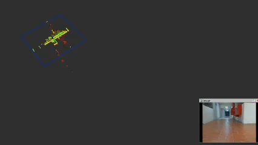
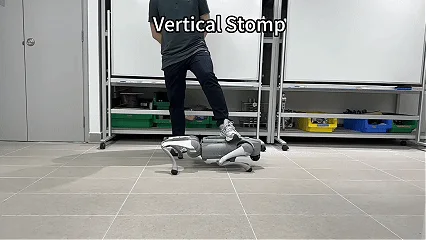
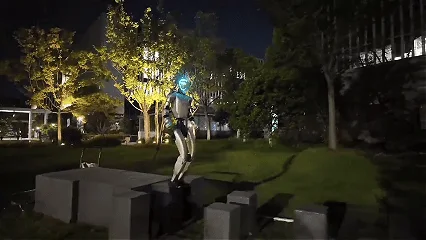
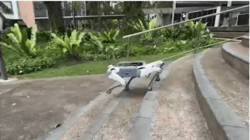
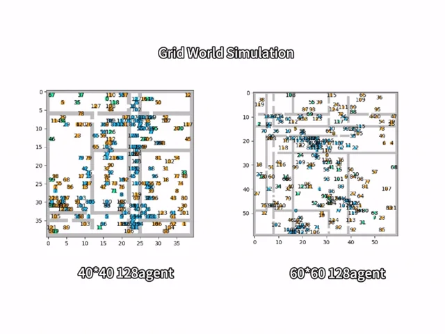
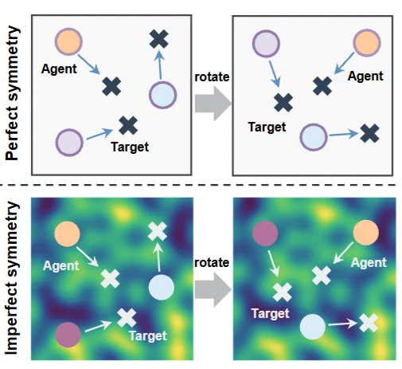
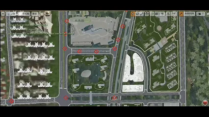

FARE
arXiv · 2026
FARE: Fast-Slow Agentic Robotic Exploration
Connecting language-based global reasoning with reactive local control for autonomous exploration.
Learning to act in the physical world
Ph.D. Student · Beihang University
I am a Ph.D. student at the State Key Laboratory of Complex and Critical Software Environment (SKLCCSE), Beihang University, advised by Wenjun Wu and Jie Luo. In 2025–2026, I am a joint Ph.D. student at the National University of Singapore (NUS), advised by Guillaume Sartoretti.
My research focuses on robot learning and embodied intelligence, spanning reinforcement learning, autonomous exploration, legged locomotion, and multi-agent decision-making. I am interested in connecting learning algorithms with reliable behavior on real robots.

FAREConnecting language-based global reasoning with reactive local control for autonomous exploration.

GPOProgressively expanding the action space to make reinforcement learning for legged robots more effective.

TAGALearning to attend to informative terrain for agile, perceptive humanoid locomotion.

KIVIBalancing proprioception and vision for robust quadruped locomotion under visual disturbances.

SIGMAUsing local geometric consensus to enable decentralized cooperation and collision-free pathfinding.

PSEAdaptively exploiting partial symmetry to improve learning efficiency and multi-agent coordination.

AIR-MA many-agent reinforcement learning platform for research on large-scale aerial robot systems.